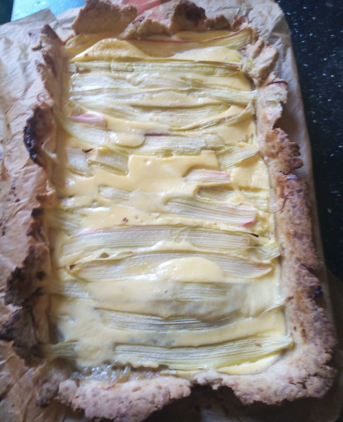

My year is conveniently split into four seasons: Rhubarb - Raspberry - Fig - Quince. As today was the first proper day of spring in Berlin, let me share my most recent variation on a classic rhubarb pie. I have been fiddling with the recipe for decades and I am fairly happy with that particular variation. In reality, I cooked it a few weeks ago as I couldn't wait for the weather to match the calendar.
I made two batches. The small ones had a better rhubarb/flan ratio.
The dough: a classic, sweet shortcrust pastry. 250g flour, to which one adds up to 150g butter, sliced thinly, a bit of sugar (~ 20g) and 10cL cold water. Mixed until homogenized, then flattened, folded, reflattened, refolded (3 times) and then properly flattened to fit a buttered dish.
The first layer: prepare a rhubarb compote with very little sugar. Cover the pastry with it when cold. The second layer: mix 25cL crème fraîche with 3 to 4 eggs and some sugar. Cover the compote with it. The third layer: cut long, thin slices of rhubarb and place then over the flan preparation.
Cook at 200°C for 35min, or until the flan part is solid but not brown. Eat when cold.